Télécharger cette étude en PDF
La tendance à l’éloignement des commerces de proximité, particulièrement hors des grandes villes, ne revêt pas qu’un enjeu économique. Les Français et Françaises qui vivent dans des communes ayant perdu leurs commerces regrettent certes l’absence d’accès à un service marchand, mais pas seulement : il leur manque également les relations sociales du quotidien, essentielles dans la vie d’un quartier et qui ont un impact fort sur la qualité de vie des habitants.
Mais comment mesurer concrètement ces apports ?
Malgré l’importance du sujet, peu d’études ont fait la lumière sur les impacts d’un commerce sur la vie du territoire. Et les travaux académiques existants se concentrent souvent sur un aspect spécifique ou sur leurs impacts négatifs, sans proposer de vision complète et synthétique de leur rôle. Cette approche partielle ne permet ni de rendre visible ni de mesurer la valeur créée par les commerçants.
Dans un billet de 2019, Emmanuelle Hoss (Paris Commerces) et Joël Gombin (opsci, ex-Datactivist), regrettaient que “la rentabilité d’un projet telle qu’on l’entend communément aujourd’hui, ne prend compte ni les externalités négatives, ni les externalités positives. Elle fonctionne en mode binaire, sans se préoccuper des interactions et des conséquences engendrées par ses actions.”
Ce constat a été le point de départ du projet de recherche-action EXCOM.
Celui-ci a été lancé avec pour objectif de nommer et de quantifier ces effets alors peu visibles dans leur globalité. Il est porté depuis 2023 par six partenaires : Paris Commerce, Métropole Rouen Normandie, Fondation Urbanis, Urbanis Aménagement, Altavia Foundation et Datactivist.
La première phase du projet, menée d’août 2023 à avril 2024, a permis une avancée significative dans la compréhension des externalités du commerce de proximité. À travers une enquête de terrain approfondie auprès de plus de 200 commerçants, micro-commerçants et artisans, l’équipe a identifié et caractérisé 18 externalités, regroupées en 6 catégories : lien social, environnement, espace public, santé et sécurité, solidarité, et vie de quartier.
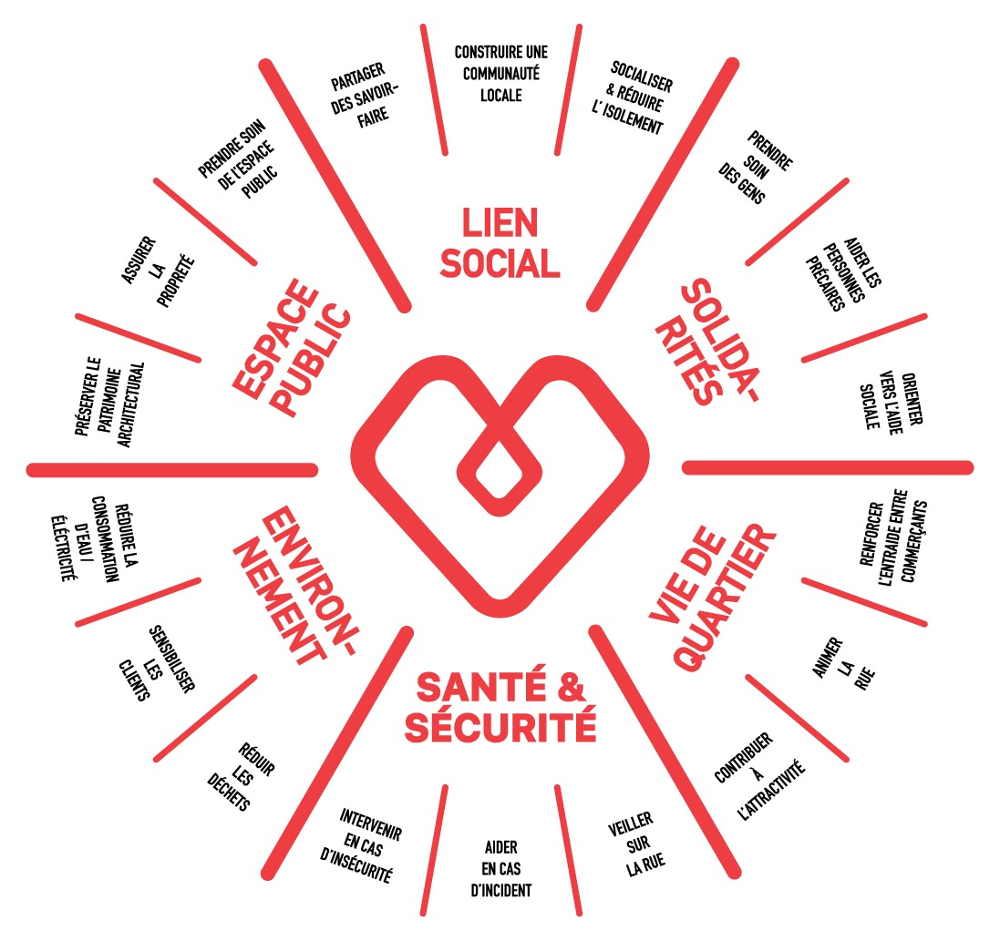
Autrement dit, ces entretiens ont permis de mettre à jour que les commerçants endossent six rôles “informels”, au-delà de ceux qui leur sont habituellement attribués :
- Animateurs de lien social : ils créent des connexions et favorisent la solidarité entre les habitants.
- Piliers de la solidarité locale : leurs actions renforcent l’entraide et la cohésion communautaire.
- Moteurs de la vie de quartier : en animant le quotidien, ils insufflent vitalité et dynamisme aux espaces publics.
- Garants de la santé et de la sécurité : ils constituent un soutien clé en cas de problème.
- Acteurs engagés pour l’environnement : par leurs pratiques responsables, ils participent activement à un avenir durable.
- Contributeurs à l’espace public : ils transforment les lieux urbains en espaces de rencontre et de convivialité.
Indéniablement, les petits commerçants et micro-commerçants ont bien plus qu’une fonction économique.
Leur impact s’étend au-delà des transactions marchandes, contribuant à tisser le lien social, à renforcer la solidarité et à dynamiser les territoires.
Ce nouveau rapport met en valeur ces contributions positives tout en éclairant les décideurs publics sur l’ensemble de la valeur créée par ces entrepreneurs. Il offre des éléments concrets pour aider les collectivités locales et les législateurs à mieux comprendre et valoriser leur rôle dans le développement des territoires.
Son objectif est double : mesurer ces 18 externalités à travers une enquête par questionnaire d’envergure nationale ayant recueilli 324 réponses entre avril et novembre 2024 ; d’autre part, proposer une méthode de mise en équivalence permettant de transformer ces externalités en valeur monétaire ou en objectifs de politique publique. Cette démarche répond à un besoin crucial identifié dès le lancement du projet : “rendre concrète cette proposition [mesurer les apports non-marchands des commerces] implique de pouvoir l’outiller. Cela nécessite de pouvoir, et savoir, objectiver les externalités, négatives et surtout positives, des commerces. Pour le dire autrement, il faut produire des données sur le sujet — car ne compte que ce qu’on compte.”1
1 Source : “De quoi la rentabilité est-elle le nom ?”
Emmanuelle Hoss, Joël Gombin, billet publié sur Medium, décembre 2019
En résumé
Aperçu des données
En plus de diffuser le questionnaire en ligne, nous sommes allés directement à la rencontre de commerçants à Paris, Saint-Ouen-sur-Seine, Marseille ainsi que la Métropole de Rouen (dans les villes de Rouen, Elbeuf-Sur-Seine, Le Trait et Duclair), qui sont donc les territoires les plus représentés dans l’échantillon.
Celui-ci reflète par ailleurs une grande variété de types de commerce. Dans l’ensemble, nous avons observé que toutes les catégories de commerces, quelle que soit la taille de la ville dans laquelle ils sont implantés, contribuent positivement à leur environnement (rue, quartier, voire ville). Dans ce rapport, nous n’avons donc relevé les différences que lorsqu’elles étaient marquées.
Si les produits ou services vendus varient grandement, les commerces interrogés ont en commun d’être très largement indépendants (près de 90%), tous en contact avec des clients (à l’exception d’un), et d’avoir un lieu de vente dédié.
89%
des commerçants participant à l’enquête sont indépendants
Ce lieu de vente est parfois partagé, notamment entre micro-commerçants. Ces derniers sont représentés dans l’enquête mais constituent une minorité de répondants (12). Car une partie des micro-commerçants occupe l’espace public différemment des commerçants ayant un pas-de-porte (ex : via une présence sur des marchés), une étude focalisée sur leur profil permettrait de préciser leurs apports à l’espace public, aux passants et habitants.
Plus de deux tiers des commerces ayant répondu à l’enquête ont au moins un salarié (ou sont composés de deux associés non-salariés). Environ la même proportion enregistre une fréquentation de moins de 50 clients par jour. L’enquête met donc principalement en lumière les apports positifs des “petits” commerces.
Le rapport est divisé en 6 parties, afin de rendre compte des apports des commerces dans autant de grandes catégories d’effets sociaux et environnementaux : lien social, solidarités, vie de quartier, santé et sécurité, environnement, espace public. Les citations qui introduisent chaque partie sont tirées d’une réponse libre du questionnaire (“Avez-vous une anecdote à nous raconter pour illustrer l’impact de votre commerce sur le quartier ?”).
Pour plus de détails sur ces effets (comment nous les avons identifiés, ce qu’ils recouvrent exactement…), vous pouvez consulter le premier rapport du projet EXCOM.
À la fin de chaque partie, nous proposons une mise en équivalence des bénéfices des commerces de proximité. Cela prendra deux formes :
- une équivalence immatérielle (ex : le service rendu par le commerçant équivaut à 2h de bénévolat par mois)
- une équivalence monétaire (ex : si ce temps était quantifié d’un point de vue financier, le service rendu par le commerçant équivaudrait à 1000€ par an)
Nous nous concentrerons sur les commerces particulièrement investis sur une thématique. Par exemple, nous montrerons que le temps passé par les commerçants très préoccupés par l’entretien de l’espace public (environ 20% des personnes interrogées dans le cadre de l’enquête) équivaut à 6h de travail d’un agent d’entretien municipal par mois. Notre calcul n’est donc pas une moyenne. Il quantifie les bénéfices générés par une minorité de “super” commerçants et commerçantes.
Il y a des cas où un service bénéficie au territoire et/ou à ses habitants mais ne relève pas des compétences d’une collectivité (il ne se substitue donc pas en tant que tel à un service public).
Dans d’autres, le coût des activités est réparti entre plusieurs acteurs (la solidarité relève par exemple des collectivités et des associations).
Enfin, les services rendus par les commerçants ne remplacent pas directement les interventions de certains services publics (par exemple, la veille sur la rue des commerçants ne remplace bien sûr pas les interventions des agents municipaux dans l’espace public).
Les estimations proposées ne rendent donc pas compte de réelles économies réalisées par une collectivité territoriale, mais correspondent à une valeur monétaire théorique.
- Une estimation quantitative simplifie forcément la réalité. Toute tentative de produire une estimation monétaire pour une dynamique sociale (ici, les apports non marchands des commerces) est imparfaite et prête à débat. Notre objectif n’est pas de proposer des chiffres fermes, indiscutables, mais de mettre en valeur un travail dépassant le strict cadre de la relation marchande.
- Dans l’optique d’une estimation monétaire mesurée, nous calculons le temps passé sur la base du coût employeur d’un salaire minimum.
- En pratique, si un service d’utilité sociale n’est pas rendu par le commerçant, il est parfois fait par des bénévoles, généralement dans un cadre associatif.
- Enfin, sauf exception des dons de produits ou d’argent (cf. catégorie Solidarités), les commerçants interagissent avec des personnes qui consomment un minimum. Le temps passé à tisser du lien, ou à entretenir la rue, dépasse les attendus minimaux du travail commercial mais ne constitue pas en soi du travail gratuit/bénévole. Nous n’avons par ailleurs pas la matière empirique pour mesurer les externalités négatives du commerce (ex : dégradation du lien social en cas de commerçant particulièrement antipathique).
Piliers de la solidarité locale
Renforcer l’entraide et la cohésion entre les habitants
“Nous sommes une boutique solidaire et nous sommes identifiés comme un lieu bienveillant par la population. On crée du lien et de l’écoute avec l’équipe de bénévoles mais aussi entre les clients.”
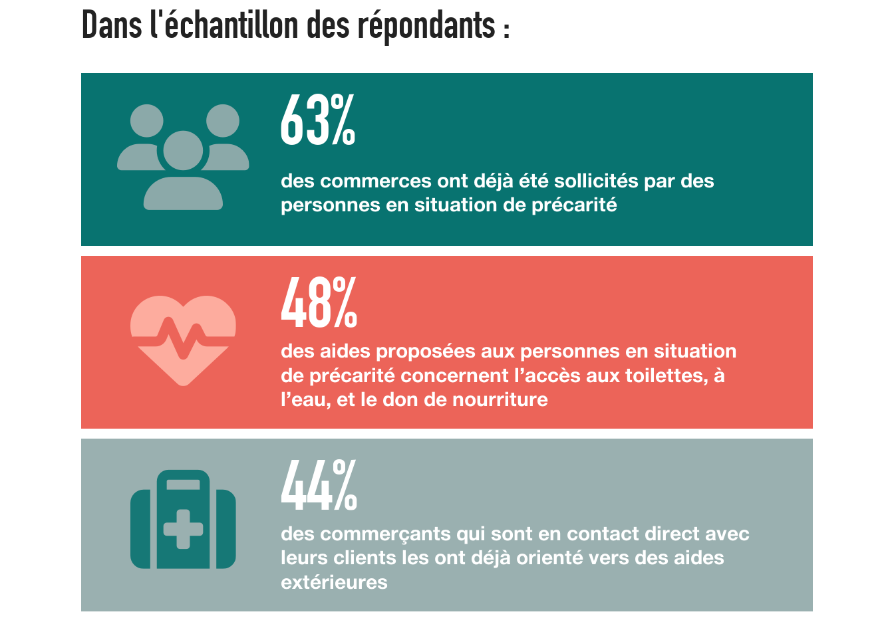
De nombreux commerçants de proximité sont régulièrement au contact de personnes en situation de précarité et peuvent agir directement auprès d’elles, en leur offrant l’accès à des services de base. Ils peuvent aussi être des points relais pour diverses formes d’aide sociale, particulièrement dans les zones moins denses, où l’accès aux services peut être limité, comme le souligne l’Avise4, association de soutien à l’économie sociale et solidaire. De nombreux commerçants ont également déclaré être impliqués dans des actions caritatives, comme la collecte de dons alimentaires ou la participation à des programmes d’aide aux personnes isolées. Ils sont ainsi comme de véritables acteurs de la solidarité, contribuant activement à soutenir les membres les plus vulnérables de leur communauté.
4 Source : “Le maintien des commerces de proximité en milieu rural.”
Avise, 2021

Face à la précarité, le premier réflexe des commerçants est d’offrir une aide “d’urgence” aux personnes qui les sollicitent. Cela prend souvent la forme d’un verre d’eau ou de don de nourriture (24% des 63% ayant déjà été sollicités), d’un thé ou d’un café (14%) ou encore d’accès aux toilettes (24%).
Les sollicitations sont cependant relativement rares. Seuls 23% des commerçants sont interpellés au moins une fois par semaine.
Il n’y a pas de variation marquée selon la taille de la ville. Cependant, nous observons une sursollicitation des cafés-restaurants par rapport à l’ensemble des commerces. Plus de la moitié d’entre eux sont interpellés au moins une fois par semaine, soit 27 points de pourcentage de plus que l’échantillon général. Cela s’explique par la facilité d’accès à des services de base qu’ils proposent.
23%
des commerçants participant à l’enquête sont interpellés au moins une fois par semaine par des personnes dans le besoin
45%
de tous les commerçants participant à l’enquête ont déjà renvoyé au moins un client vers une aide extérieure (services sociaux, de santé ou forces de l’ordre).
Il existe une différence marquée selon la taille de ville. Les commerçants des villes de moins de 100 000 habitants sont moins concernés par cette réorientation. Cela s’explique par le fait que, dans les zones moins denses, ils deviennent plus facilement des intermédiaires entre des usagers et des services publics plus éloignés. Par ailleurs, nous pouvons faire l’hypothèse que dans les villes plus petites, les commerçants connaissent mieux le tissu local et sont plus à même de renvoyer une personne dans le besoin vers un interlocuteur adapté.
Dans les zones rurales et peu denses, les commerces de proximité sont souvent les seuls points de services essentiels pour les habitants. 59% des communes rurales n’ont plus aucun commerce de proximité5, ce qui rend les commerces existants d’autant plus cruciaux.
5 Source : “Le maintien des commerces de proximité en milieu rural.”
Avise, 2021
Les commerces de proximité sont des points d’échange informels avec les clients, mais également des relais vers des services adaptés à répondre à des besoins spécifiques. Ils sont également en première ligne face à des personnes précaires.
20% des commerces sont sollicités plusieurs fois par jour par des personnes dans le besoin (faisons l’hypothèse de 2 personnes). Le don de nourriture est l’une des formes d’aide les plus fréquentes. Estimons le coût dépensé par sollicitation à 0,5€. Le temps passé est également notable, de l’ordre de 30 minutes par semaine.
Le travail d’un ou une “super” commerçante équivaut à 2h de bénévolat par mois au sein d’une association de solidarité (ex : Secours populaire).
La valeur théorique monétaire de ces services d’entraide est d’environ 1293€ par an et par commerce.
Méthode de calcul : (temps passé par semaine (en heures) * nombre de semaines travaillées par an * coût horaire) + (nombre de dons * nombre de semaines travaillées par an * coût du don)
(0,5 * 47 * 54) + (2 * 47 * 0,5) = 1292,5
Calcul à l’échelle d’un territoire (ville, quartier, rue…) : bénéfice d’un commerce * nombre de commerces total sur le territoire * taux de commerçants très investis (0,2)
Exemple : Prenons l’exemple d’une ville comptant 1000 commerces.
1293 * 1000 * 0,2 = 258 500€
À l’échelle de la ville, les commerces créent une valeur théorique d’environ 259 000€ dans le domaine de l’entretien des solidarités.
Moteurs de la vie de quartier
Dynamiser et animer le quotidien local
“La vie de quartier chez nous, c’est accueillir les nouveaux arrivants lors de nos dégustations de vins tous les jeudis soir. Mes clients sont vite devenus amis entre eux.”
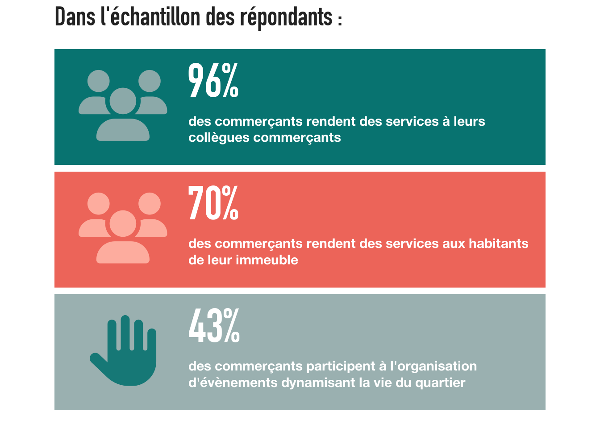
Les commerces de proximité sont des piliers essentiels à la construction d’une communauté locale dynamique et attrayante. Ils jouent un rôle crucial dans le tissu social, économique et culturel d’un quartier.
Ils s’intègrent tout d’abord dans des réseaux professionnels de proximité. La quasi-totalité (96%) des personnes interrogées déclare ainsi rendre des services aux autres commerçants des alentours. On observe par ailleurs que l’intégration dans le tissu associatif local va souvent de pair avec un réseau d’entraide commerciale.
96%
des commerçants participant à l’enquête rendent des services aux autres commerçants des alentours
Cette entraide prend des formes variées : recommander un commerce voisin à des clients, réceptionner un colis, ou encore veiller sur la boutique en cas d’absence. Cela peut également prendre la forme de collaborations directes, notamment des micro-commerçants qui n’auraient pas de pas-de-porte. Ce soutien mutuel crée des dynamiques de réciprocité et renforce les solidarités professionnelles à l’échelle de la rue.

Des relations de proximité sont également développées entre les commerçants et les habitants du quartier. Plus de deux tiers des commerçants (70%) rendent ainsi service aux habitants de l’immeuble dans lequel se situe leur local (réception d’un colis, réductions…).
70%
des commerçants participant à l’enquête rendent des services aux habitants de l’immeuble dans lequel se situe leur local
Une enquête réalisée par Clara Hercule pour Sur-Mesure6 a montré les liens particulièrement fort entre les commerçants et les habitants d’un quartier prioritaire de la politique de la ville (QPV), pour lesquels les lieux de vente répondent à des besoins particuliers, notamment en termes de sociabilité. À travers des portraits d’entrepreneurs, l’autrice montre leur insertion dans des réseaux sociaux locaux et les formes de soutiens réciproques entre riverains à commerçants (pour lesquels l’ancrage territorial peut par ailleurs être un avantage concurrentiel). Elle écrit : “Multiplier les relations non-marchandes avec la population locale peut être un moyen de prouver son engagement dans la vie du quartier. Il s’agit d’échanger un service contre un autre de manière tacite et différée dans le temps. Cela génère de l’inter-reconnaissance et un intérêt pour les habitants à défendre le commerçant en cas de conflit.”
6 Source : “L’ancrage local, une ressource pour les commerces dans les quartiers ?”
Revue Sur-Mesure, 2018
Enfin, en plus de tisser des liens professionnels et interpersonnels à l’échelle du quartier, les commerçants contribuent à l’animer par l’organisation, parfois dans le cadre d’associations de commerçants, d’évènements. 43% des répondants en organisent ainsi au moins un par an (et plus d’un tiers au moins deux). Ces actions parfois collectives participent à la vitalité et l’attractivité du quartier.
Les commerces de proximité sont des acteurs clés de la vie de quartier, tissant des réseaux d’entraide professionnelle et sociale entre commerçants et habitants. Ils soutiennent les dynamiques locales par des services réciproques, des liens de sociabilité, et l’organisation d’événements.
40% des commerces participent à l’organisation d’au moins un évènement de quartier par an. Plus de la moitié prend également le temps d’aider régulièrement les commerçants des alentours et ses voisins. Pour les plus investis d’entre eux (environ 20%), le temps passé sur un mois correspond à environ 2h. 53% des commerçants collaborent par ailleurs avec au moins une association locale, hors solidarité (ex : don pour une tombola). Estimons ce coût à 200€ annuellement.
Le travail d’un ou une “super” commerçante équivaut à une petite subvention à une association locale & 2h de bénévolat dans une association.
La valeur théorique monétaire de cette animation locale est d’environ 1446€ par an et par commerce.
Méthode de calcul : (temps passé par semaine (en heures) * nombre de semaines travaillées par an * coût horaire) + équivalent monétaire moyen des dons aux associations
(0,5 * 47 * 54) + 200 = 1445,5
Calcul à l’échelle d’un territoire (ville, quartier, rue…) : bénéfice d’un commerce * nombre de commerces total sur le territoire * taux de commerçants très investis (0,2)
Exemple : Prenons l’exemple d’une ville comptant 1000 commerces.
1446 * 1000 * 0,2 = 289 100€
À l’échelle de la ville, les commerces créent une valeur théorique d’environ 289 000€ dans le domaine de la vie de quartier.
Garants de la santé et sécurité
Contribuer à la santé, à la sécurité et au confort des habitants
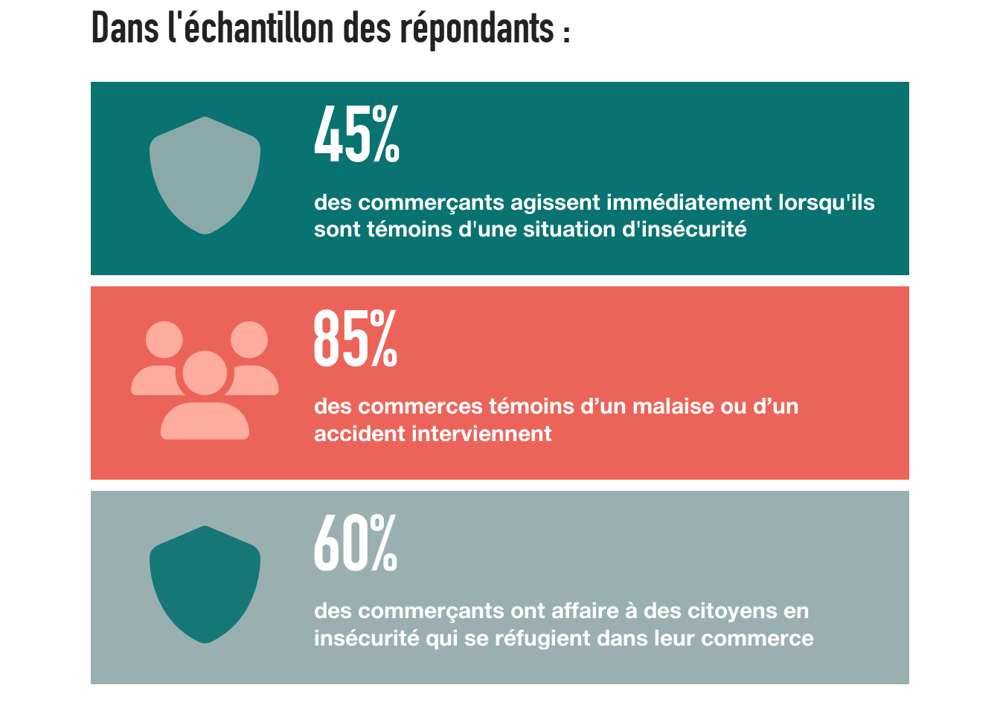
Les commerces de proximité jouent un rôle crucial dans la santé et la sécurité des villes. Leur présence physique dans les rues contribue de manière significative à l’animation urbaine et à la création d’un environnement sûr et vivant. Jane Jacobs, urbaniste et philosophe américaine, a souligné l’importance des commerçants en tant qu’“yeux sur la rue”, autrement dit comme gardiens informels de l’espace. Les commerces de proximité, en attirant des flux constants de clients, animent la rue et le quartier, ce qui contribue à créer un réseau de contrôle social spontané et au sentiment de sécurité.
En plus de générer du passage et d’avoir une activité ouverte sur la rue, les commerçants peuvent intervenir directement lorsqu’une situation problématique se présente (malaise, accident ou, plus rarement, altercation), ou transmettre l’information immédiatement aux services compétents. Les situations d’insécurité sont relativement rares. 39% des commerçants n’en ont jamais rencontré. Et parmi ceux qui y ont fait face, 78% indiquent intervenir moins de deux fois par an. Mais lorsqu’elles se produisent, les commerçants sont souvent en première ligne. En plus d’intervenir, quand la situation ne les met pas en danger, ils peuvent alerter rapidement.
39%
des commerçants participant à l’enquête n’ont jamais rencontré de situations d’insécurité
Ils peuvent également répondre dans l’immédiat face à un malaise ou encore un accident, en proposant un espace pour se reposer (dans les cas les moins graves), une aide de premier secours et, dans les cas les plus graves, prendre contact immédiatement avec les secours. 18% des commerçants interviennent au moins une fois par mois.
Enfin, les commerces peuvent être des espaces de refuge. Au-delà de leur capacité d’intervention, ils jouent un rôle dans le sentiment de sécurité des passants, et notamment des passantes. Ils peuvent en effet être des lieux sûrs (“safe spaces”) dans lesquels entrer en urgence pour se protéger contre le harcèlement de rue, dans un contexte où 9 femmes sur 10 disent anticiper les actes et les propos sexistes et adopter des conduites d’évitement pour ne pas les subir (selon un rapport du Haut Conseil à l’égalité femmes-hommes7). Des dispositifs permettent d’identifier ces lieux, dont le plus connu est Angela8 (un autocollant permet de reconnaître les établissements participants, au sein desquels une personne se sentant menacée peut demander “Où est Angela” et se voir offrir de l’assistance).
7 Source : Rapport annuel 2024 sur l’état des lieux du sexisme en France
Haut Conseil à l’Egalité entre les femmes et les hommes, 2024
8 Plan Angela
Arrêtons les violences, 2020
L’impact des commerces de proximité sur la sécurité se manifeste à plusieurs niveaux : prévention par leur simple présence et l’affluence qu’ils génèrent, intervention en cas de situations d’insécurité ou d’incidents, accueil des personnes qui ont besoin d’un lieu sûr.
Par sa simple présence sur la rue, le commerce a un effet dissuasif et contribue au sentiment de sécurité. 20% de commerçants interviennent par ailleurs au moins une fois par mois face à un incident dans le domaine public, et autant en cas d’accident. La majorité a également déjà accueilli des personnes en détresse dans son espace. Nous estimons à 10 minutes par jour le temps passé à surveiller la rue et, dans une moindre mesure, à accompagner les personnes qui en ont besoin.
Le travail d’un ou une “super” commerçante équivaut à plus de 3 heures de temps d’un agent municipal par mois.
La valeur théorique monétaire de ce temps de surveillance et d’assistance est d’environ 2068€ par an et par commerce.
Méthode de calcul : temps passé par semaine (en heures) * nombre de semaines travaillées par an * coût horaire
0,83 * 47 * 54 = 2067,5
Calcul à l’échelle d’un territoire (ville, quartier, rue…) : bénéfice d’un commerce * nombre de commerces total sur le territoire * taux de commerçants très investis (0,2)
Exemple : Prenons l’exemple d’une ville comptant 1000 commerces.
2068 * 1000 * 0,2 = 413 500€
À l’échelle de la ville, les commerces créent une valeur théorique d’environ 414 000 euros dans le domaine de la santé et la sécurité.
Acteurs engagés pour l’environnement
Adopter des pratiques responsables pour un avenir durable
“Quand les clients me demandent une carte de visite, je leur réponds : pour moins de Flyers et plus de fleurs, je vous propose de flasher le QR CODE du site internet.”
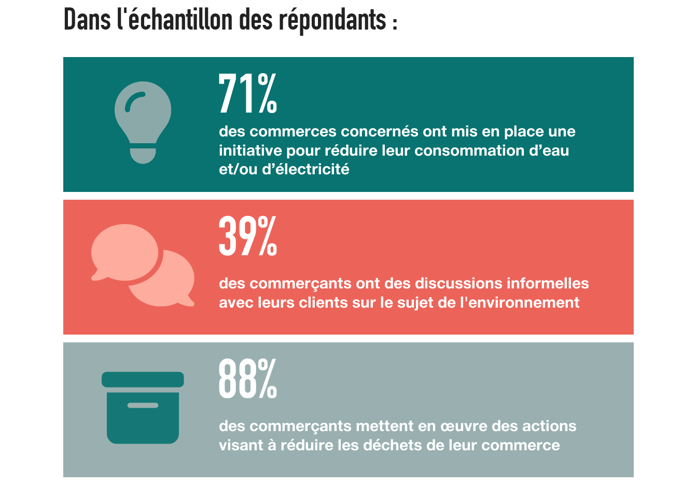
Comme chaque acteur individuel ou collectif, les commerces ont un rôle à jouer dans la transition environnementale. En plus de prendre en compte les injonctions à améliorer leurs performances énergétiques, l’enquête montre un ensemble d’actions pro-actives de la part des commerces de proximité. Meilleure gestion des déchets (88% des répondants), réduction de ses consommations (71%), sensibilisation de la clientèle à des pratiques plus durables (39%) : les commerçants s’engagent parfois activement dans des démarches plus responsables.
Une majorité de commerçants interrogés a par exemple investi pour réduire sa consommation électrique (ex : ampoules basse consommation). Cela ne s’explique pas uniquement par souci écologique mais également par le coût élevé de l’électricité. L’usage de solutions pour économiser de l’eau (ex : filtre économiseur d’eau) est moins répandu mais pas rare : il concerne 20% des commerces.
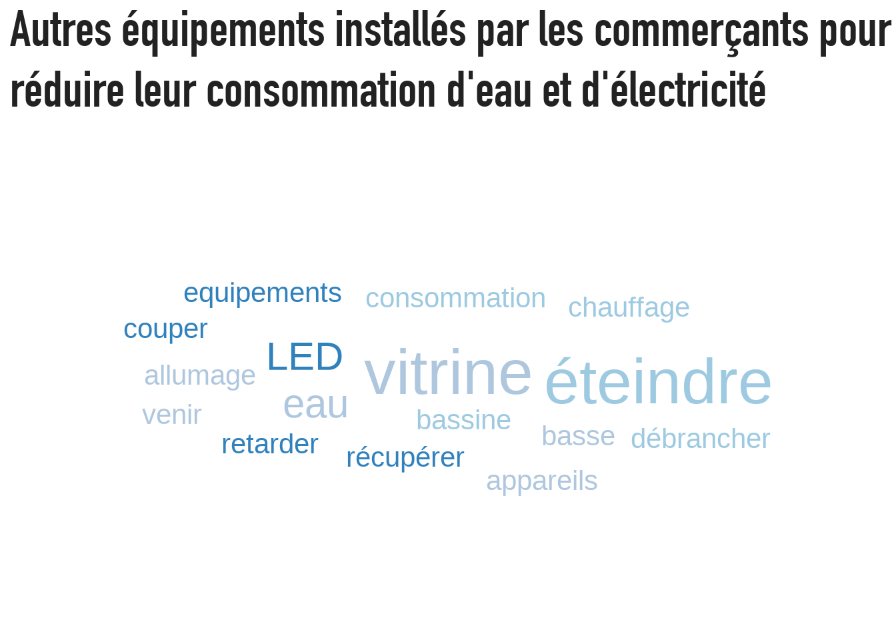
D’autres initiatives, qui relèvent des pratiques plutôt que de l’équipement, sont également mentionnées par les commerçants : arrêter l’éclairage la nuit, débrancher des appareils, réduire le chauffage, etc.
66% des commerces ont par ailleurs à cœur de donner à leurs clients la possibilité d’avoir des modes de consommation plus responsables. 39% ont régulièrement des discussions informelles sur le sujet, 26% proposent des conseils. Une petite minorité (5%) propose des réductions pour favoriser la diminution des emballages à usages uniques. Cela concerne par exemple les cafés et certains restaurants proposant de la vente à emporter, dans lesquels les clients peuvent parfois emmener leur propre contenant (bien que certains commerçants déclarent ne pas souhaiter prendre de risque sanitaire en autorisant les emballages extérieurs).
66%
des commerçants participant à l’enquête ont à cœur de donner à leurs clients la possibilité d’avoir des modes de consommation plus responsables
Enfin, la meilleure gestion des déchets est un sujet important pour les commerçants. Si une large majorité d’entre eux (88% des commerçants concernés) est attachée à la réduction des déchets, 69% proposent des solutions de recyclage dans leur commerce.
Environ 34% des répondants ont déclaré mettre en place des actions “autres” lorsque nous les avons interrogés sur leurs pratiques de recyclage. Ils ont fait remonter quelques pratiques que nous n’avions pas identifiées dans le questionnaire, par exemple : récupération des végétaux, dons d’invendu, reprise des lunettes, tri des métaux.

Concernant la réduction des déchets, de nombreux commerçants s’inscrivent dans une chaîne de production plus responsable : ils sollicitent des fournisseurs ayant des pratiques plus durables et proposent à leurs clients de consommer moins d’emballages. Ce dernier point s’inscrit par ailleurs dans le cadre d’un encouragement légal, les sacs en plastique à usage unique gratuits étant interdits depuis plusieurs années.
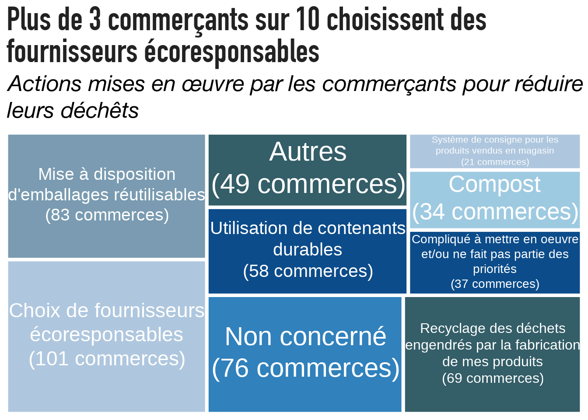
Les commerces de proximité ont un triple rôle à jouer dans le cadre de la transition écologique : en plus de mettre en place des actions de réduction des déchets et de recyclage, ils peuvent réduire leurs consommations d’eau et d’électricité et ont un rôle de sensibilisation de leurs clients (et dans une moindre mesure de leurs fournisseurs).
Ces pratiques sont encouragées par des associations, parmi lesquelles Zero Waste France, qui a élaboré un guide “Mon commerçant zéro déchet” à destination des commerçants qui souhaiteraient mettre en place des pratiques écoresponsables.
26% des commerçants donnent des conseils pratiques à leurs clients pour mettre en œuvre des pratiques de consommation plus responsable. Cela permet notamment d’éviter que certains déchets, par exemple d’emballages à usages uniques, soient produits.
Le travail d’un ou une “super” commerçante équivaut à une campagne de sensibilisation (ex : d’une agence publique, ou d’une association type Zéro Waste France).
Les données à disposition ne nous permettent pas de proposer une équivalence monétaire.
Contributeurs à l’espace public
Transformer les lieux urbains en espaces de rencontre et de convivialité
“Les gens aiment bien les vitrines, ça leur fait un petit moment de poésie.”
“Depuis 10 ans, nous réclamions, avec les autres commerçants de la rue, des jardinières pour verdir cette rue et aussi lutter contre le stationnement sauvage. Depuis février 2024, des jardinières ont été installées. Nos clients apprécient énormément et nous aussi.”
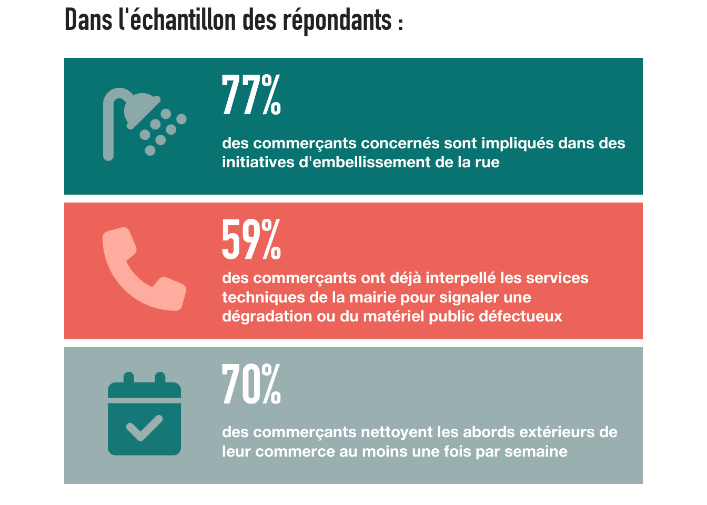
Les commerçants contribuent de plusieurs manières à la propreté de la rue et à l’amélioration de l’espace public : nettoyage des trottoirs, signalement des problèmes, décorations saisonnales, participation à des projets d’aménagement (y compris informels)… Ces initiatives contribuent à la perception positive d’espaces piétons rendus plus agréables et sont un complément direct aux projets menés par les services municipaux.
Mettre en place des actions venant prendre soin de sa vitrine est la façon la plus évidente de contribuer à l’embellissement de la rue. La moitié des répondants indique s’impliquer particulièrement. Ils peuvent d’ailleurs être reconnus par des prix ou des concours organisés par les municipalités, les associations de commerçants, ou des acteurs nationaux (c’est par exemple le cas de Petits Commerces, qui distingue la plus belle vitrine de Noël9), qui encouragent l’émulation et valorisent les meilleures pratiques en matière de décoration et d’animation commerciale.
9 La plus belle vitrine de Noël de France 2024!
Petits Commerces, 2024
10 Source : “REVITALISATION COMMERCIALE DES CŒURS DE VILLES DE L’HÉRAULT”
DDTM 34 - Direction départementale des territoires et de la mer, 2024
En collaboration avec les services publics et dans la limite de ce que permettent les règles d’urbanisme, les commerces peuvent également contribuer au verdissement de la rue (jardinières, plantes en pot, voire, dans des cas plus rares, co-entretien de jardins partagés) et plus largement occuper l’espace public.
Des expérimentations d’accompagnement à l’embellissement des devantures, terrasses et abords existent localement. Dans la commune de Bessan10, en Hérault, une charte oriente ainsi les commerçants dans leurs initiatives, et des aides (communales et de l’agglomération) les soutiennent financièrement.
“Yeux sur la rue”, pour reprendre la formule de Jane Jacobs, les commerçants sont également aux premières loges des éventuelles dégradations de l’espace public. Plus de la moitié d’entre eux ont déjà interpellé les services de leur mairie pour solliciter une intervention. Cela est cependant peu fréquent. Seuls 20% le font au moins une fois par mois.
20%
des commerçants participant à l’enquête interpellent les services de leur mairie au moins une fois par mois
L’existence d’applications dans certaines collectivités facilite peut-être le dialogue entre usagers de l’espace (dont les commerçants) et service de la mairie. Nous n’avons cependant pas de données dans suffisamment de territoires pour comparer la fréquence d’échange avec les pouvoirs publics selon l’existence ou non d’outils numériques.
En plus de contribuer à l’embellissement de la ville, les commerçants assurent sa propreté, en complément de services d’entretien fournis par les collectivités. 70% des commerces nettoient au moins une fois par semaine leurs abords, et 15% le font plusieurs fois par jour. Tous les types de commerces sont concernés, bien que ceux qui génèrent beaucoup de passage (cafés, restaurants, alimentaires…) ont tendance à le faire un peu plus fréquemment que les autres. Si l’entretien de la rue ne se remarque pas toujours, tant il semble acquis, c’est généralement quand les commerces cessent de l’assurer qu’on se rend compte de ce travail peu visible.
Nous avons également mesuré les apports des commerces à la préservation du patrimoine architectural. L’enquête révèle que 29% d’entre eux apportent un soin particulier à la façade de l’immeuble dans lequel ils sont installés. Ceux qui occupent des bâtiments historiques (classés ou non) contribuent en effet à leur entretien, voire à leur réhabilitation.
29%
des commerçants participant à l’enquête apportent un soin particulier à la façade de l’immeuble dans lequel ils sont installés
Les commerces de proximité jouent un rôle important dans l’embellissement et la propreté des espaces publics, qu’il s’agisse de nettoyer les abords, décorer les vitrines, ou contribuer au verdissement et à l’entretien de leur environnement. Ils participent également en partie à préserver le patrimoine architectural et signalent les problèmes dans l’espace public.
15% des commerces nettoient les abords du magasin plusieurs fois par jour. Cette activité, couplée à l’entretien de la devanture (ex : soin des plantes) leur prend environ 15min par jour.
Le travail d’un ou une “super” commerçante équivaut à 5 heures de travail d’un agent d’entretien de l’espace public par mois.
La valeur théorique monétaire de ce temps d’entretien de l’espace est d’environ 3114€ par an et par commerce.
Méthode de calcul : temps passé par semaine (en heures) * nombre de semaines travaillées par an * coût horaire
1,25 * 47 * 54 = 3113,75
Calcul à l’échelle d’un territoire (ville, quartier, rue…) : bénéfice d’un commerce * nombre de commerces total sur le territoire * taux de commerçants très investis (0,2)
Exemple : Prenons l’exemple d’une ville comptant 1000 commerces.
3114 * 1000 * 0,15 = 467 063€
À l’échelle de la ville, les commerces créent une valeur théorique d’environ 467 000 euros dans le domaine de l’entretien de l’espace public.
Conclusion
Cette étude révèle le rôle complexe des commerces de proximité, qui constituent des points d’ancrage dans le tissu urbain et dont le rôle ne se limite pas à la production de valeur économique. Ils sont de véritables piliers du développement durable des villes, agissant simultanément sur les plans social, environnemental et économique.
Parler, demander son chemin, trouver refuge quand on est suivi, signaler un problème, échanger une parole… Ces pratiques sociales simples mais essentielles trouvent encore un relais chez les commerçants. Certains d’entre eux assurent un service public de fait, sans y être contraints, par choix et par engagement. Ils veillent sur la propreté de leur rue, sur la sécurité de leur quartier, sur le tissu social de leur ville. En d’autres termes, ils endossent de nombreuses fonctions sociales, à des degrés divers.
Cet engagement a un prix ; c’est une charge assumée mais un coût encore ignoré. L’étude le démontre largement : pour une ville comptant 1000 commerces, la valeur de ces services rendus atteint presque les 3 millions d’euros annuels. Ce chiffre, bien que théorique, révèle l’ampleur du travail invisible réalisé par ces acteurs essentiels de la vie urbaine. Il met en lumière un paradoxe : alors que les commerces de proximité assument de fait des missions d’intérêt général, ce rôle social reste largement sous-évalué dans les politiques publiques.
À l’heure où de nombreux centres-villes luttent contre la désertification commerciale, il devient urgent de reconnaître et de valoriser ces contributions qui, bien que non marchandes, sont essentielles à la vitalité de nos territoires. Car en perdant un commerce, c’est tout un écosystème social qui s’effrite, avec un coût bien réel pour la collectivité. L’enjeu pour les politiques publiques réside donc dans la préservation de ces lieux à la fonction structurante de l’espace urbain, pour leur donner les moyens de continuer à être des piliers du vivre-ensemble.
Portraits de territoire
Le nombre de résultats collectés sur ces différents territoires a permis d’en tirer des focus. Ils concernent la Métropole Rouen Normandie et les villes de Paris et Saint-Ouen.
Le tableau comparatif met en lumière des similarités entre les différents territoires, autrement dit montre des tendances de fond sur la production d’effets sociaux et environnementaux par les commerçants. Ce comparatif confirme qu’indépendamment de leur territoire d’implantation, les commerces ont des effets concrets sur le quartier, ses habitants, ses passants et les autres commerçants. Les commerces qui (co)produisent du lien social, des solidarités ou encore impactent positivement l’espace public ne sont pas des accidents statistiques mais existent partout.
Notre enquête s’est cependant essentiellement concentrée sur des villes. Or la littérature académique et de nombreux rapports montrent que le lien des habitants aux commerces varie souvent selon la densité de population. Afin de rendre compte des dynamiques propres aux territoires ruraux et peu denses, sur lesquels les commerces sont susceptibles de produire des effets légèrement différenciés, il serait nécessaire de collecter plus de données.
139
réponses collectées à Paris
11
réponses collectées à Saint-Ouen
75
réponses collectées à la Métropole Rouen Normandie
En 2023, la commune de Paris compte près de 61.000 commerces et services commerciaux, pour plus de 2.1 millions d’habitants, soit environ 29 commerces pour 1.000 habitants.
139 réponses ont été collectées à Paris, soit 43% de l’échantillon des répondants à l’enquête.


Lien social
Solidarités

Vie de quartier
Santé et sécurité

Environnement

Espace public

La commune de Saint-Ouen-sur-Seine compte 1.561 commerces et entreprises de services, pour un peu plus de 53.200 habitants, soit environ 29 commerces pour 1.000 habitants.
11 réponses ont été collectées à Saint-Ouen, soit 3% de l’échantillon des répondants à l’enquête.
Lien social
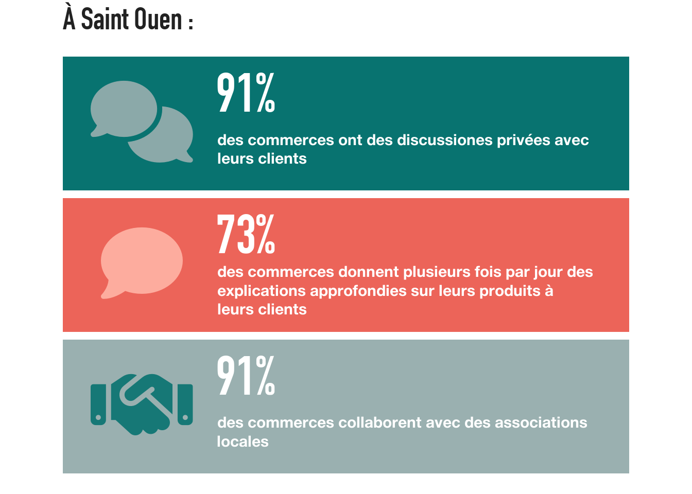
Solidarités
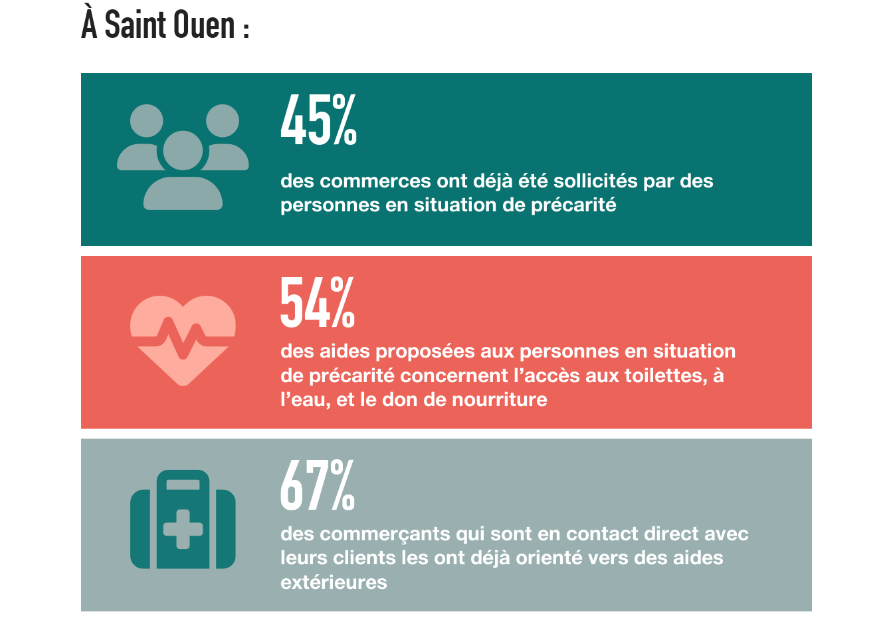
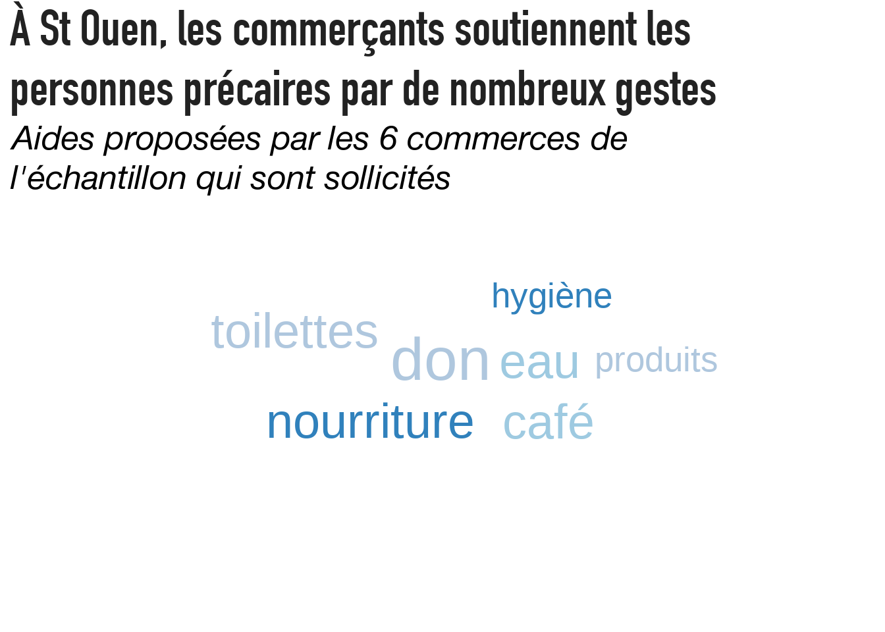
Vie de quartier

Santé et sécurité

Environnement


Espace public

La ville de Rouen compte 2.968 commerces11, pour plus de 110.000 habitants, soit environ 26 commerces pour 1.000 habitants. La ville d’Elbeuf-Sur-Seine compte 334 commerces12, pour près de 16.000 habitants, soit environ 21 commerces pour 1.000 habitants. La ville de Duclair compte 80 commerces13, pour plus de 4.000 habitants, soit environ 20 commerces pour 1.000 habitants. Enfin, la ville du Trait compte 60 commerces14, pour près de 5.000 habitants, soit environ 12.5 commerces pour 1.000 habitants.
11 Source : Chiffres-clés 2023
Observatoire Commerce Métropole Rouen Normandie
12 Source : Ibid.
13 Source : Ibid.
14 Source : Ibid.
Le portrait de territoire de la Métropole Rouen Normandie porte sur ces 4 villes : Rouen, Elbeuf-Sur-Seine, Duclair et Le Trait. 75 réponses ont été collectées dans ces 4 territoires ; 47 à Rouen, 10 à Elbeuf-Sur-Seine, 7 à Duclair et 11 à Le Trait, soit 23% de l’échantillon des répondants à l’enquête.
Lien social
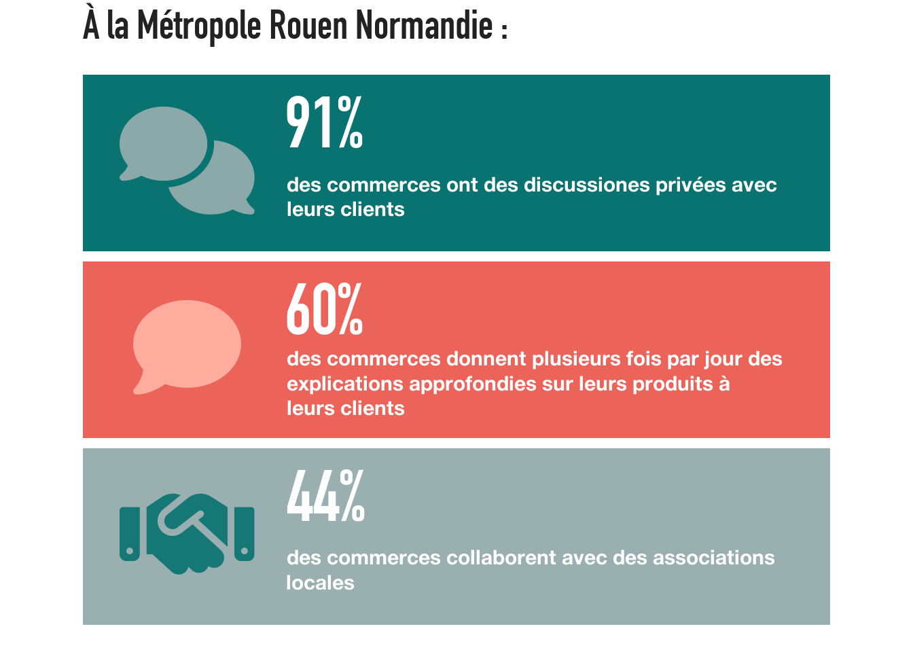
Solidarités

Vie de quartier

Santé et sécurité
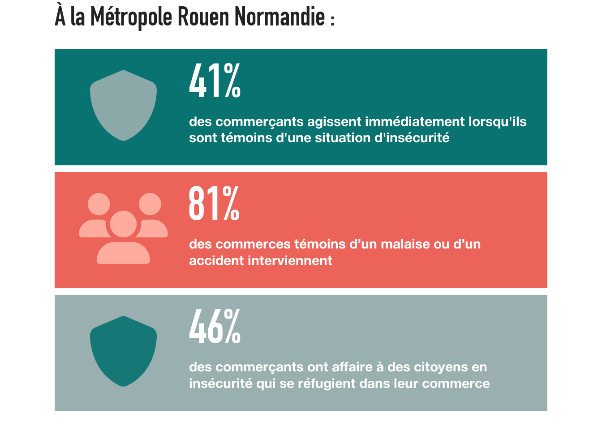
Environnement

Espace public
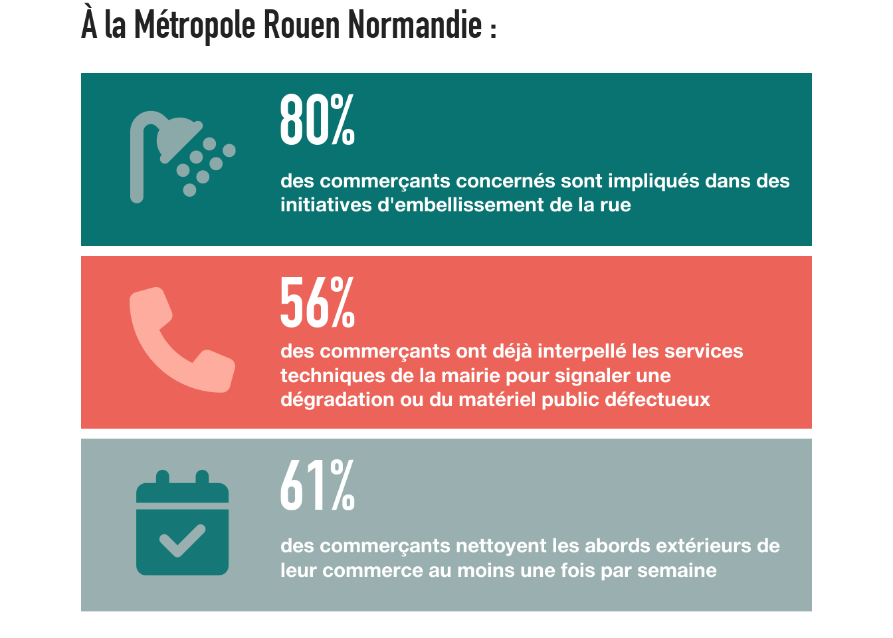
Notice technique
L’enquête sur les effets du commerce de proximité, en partenariat avec Paris Commerces, la fondation Urbanis, Urbanis aménagement, la fondation Altavia ainsi que la métropole de Rouen Normandie, a été diffusée sur une durée totale de 32 semaines entre le 4 avril et le 22 novembre 2024, auprès de commerces de France entière. L’échantillon final représente 324 commerces dont 139 à Paris, 75 à Métropole Rouen Normandie, 11 à St Ouen et 99 dans le reste de la France. L’enquête comportait 40 questions posées via un questionnaire en ligne sur l’outil Fillout. En plus d’une diffusion par mail, newsletter et réseaux sociaux, une partie de l’équipe s’est déplacée à Paris, St Ouen et Rouen du 22 au 24 octobre 2024 pour récolter 160 des 324 réponses.
L’échantillon a été déterminé par rapport à :
- une population totale de 300.000 commerces en France d’après l’INSEE
- une marge d’erreur de 5%
- un intervalle de confiance de 90%
L’échantillon minimum est de 273 réponses. L’échantillon de l’enquête est composé de 50 réponses de plus.
Les pourcentages sont exprimés en part des commerces répondants pour chacune des questions. Le traitement des données et l’analyse détaillée sont disponibles dans le rapport d’analyse complète.
Les données brutes de l’enquête, anonymisées, sont disponibles ici.
Le code source ayant permis la génération de l’ensemble des graphiques et tableaux de l’enquête est disponible ici.
Le présent rapport, produit par Datactivist, est mis à disposition sous licence Creative Commons CC BY SA 4.0.
Réalisé par Datactivist
mars 2025